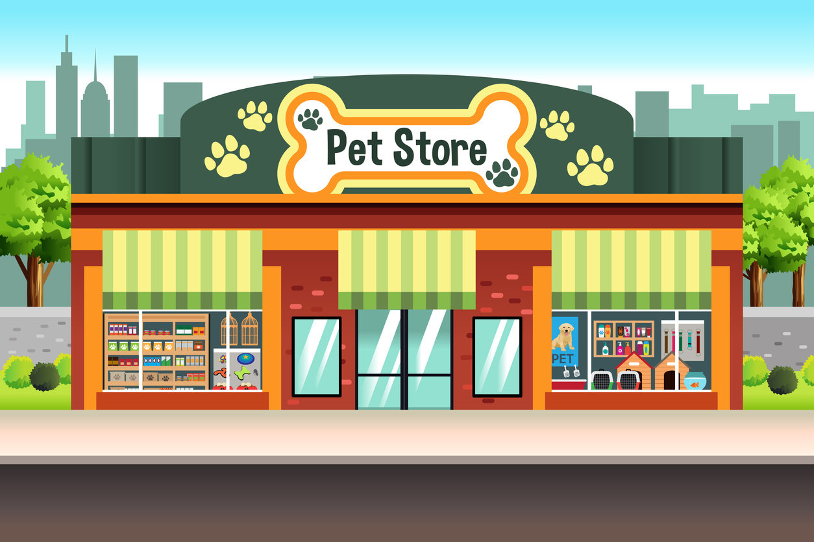

There is so many things you have to do in order to start a pet supplies store. So many steps and recources youll need to have. Opening a pet store can include but is not limited to making a business plan, maybe going to college and getting a business degree, purchasing supplies, figuring out where you want it, if your gonna build from the ground up, purchace, or rent, rules and regulations, where your funds are gonna come from etc... There is so much that you need to think about when opening your own pet supplies store.
When opening a pet supplies store decide whether you want to allow pets inside the store or not. Most but not all Pet supply chains allow pets to come inside whith their families. It is also a great idea if you decide on making a spot for pets to play while there owners are shopping or if your gonna have a leash or no leash rule within your store. Your pet supplies store should be family oriented.


in a pet supplies store its good to decide whether you'll give the pets freedon to choose or run around or be leashed. You never really know if a pet is agressive or not so its definately a big decision to make. It could cause some major problems lawfully so make sure you have all the legal documentaion sorted out as well before starting a business.

© 2024 Opening A Pet Supplies Store